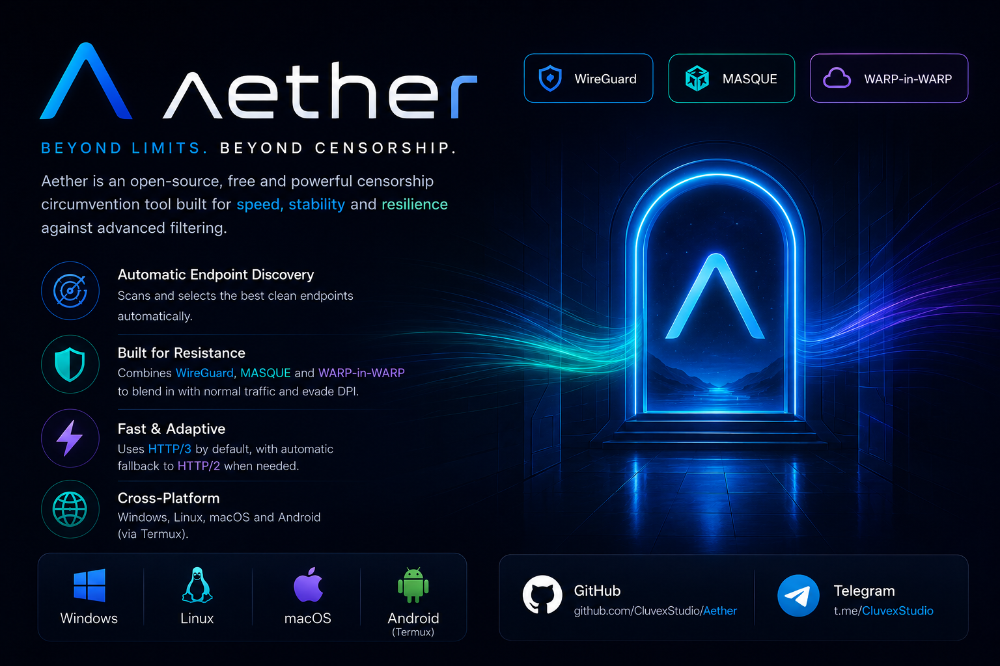

Aether
Disconnected
- Protocol
- MASQUE / HTTP/3
- Latency
- --
- Uptime
- 0s
- Exit Location
- --
- Local proxy
- 127.0.0.1:1819
Android sends traffic through the proxy only from apps that use it. Set Wi-Fi proxy to 127.0.0.1:1819 or use a client that reads SOCKS. On a rooted device proxy redirection works app-wide.